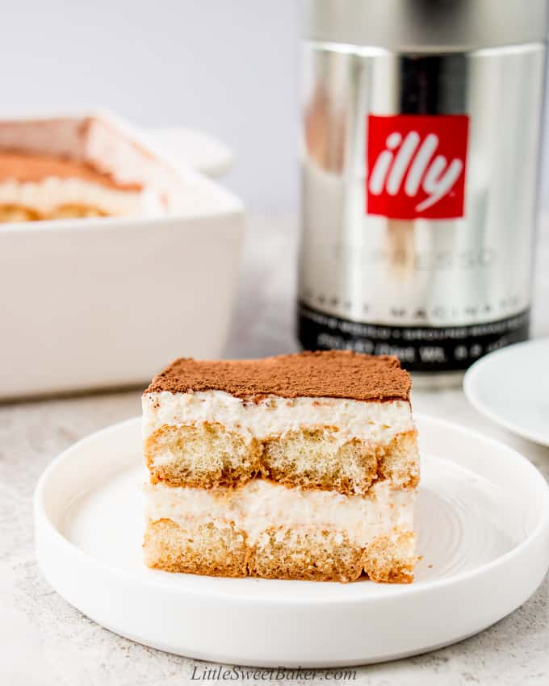

Eggless Tiramisu Recipe from Little Sweet Baker
Description:
All the great taste of a traditional Tiramisu, but easier to make and made without raw eggs.

Ingredients:
- 1 cup (250mL) whipping cream
- 1 cup (250g) softened marscarpone cheese
- 1/4 cup (50g) granulated sugar (I use cane sugar)
- 1.5 cups of espresso
- 2 tsbp (30 mL) of Kahlua (I use way more alcohol than that)
- About 1 bag of lady fingers from Sprouts for 1 square baking pan
Steps:
- Beat the whipping cream until medium-stiff peaks form. Set aside. (Note: I would recommend beating it until medium-peak when in doubt. Some brands of marscapone are stiffer and others are softer. If you overbeat the whipping cream, the final mixure will become too stiff and clumpy. For consistency sake, use marscapone from Sprouts next time. Aldi and Trader Joe's marscapone are harder.)
- Mix the mascarpone, sugar, and vanilla until combined. Add in the whipped cream. Use a rubber spatula and fold the mixture a few times scraping the bottom and sides of the bowl. Then use the electric mixer to beat again until smooth.
- Stir the coffee and liquor together. Lightly dip each ladyfinger into the coffee mixture. Do not soak or the cookies will be soggy. Line an 8×8″ or 9×9″ square baking dish with a layer of cookies.
- Spread half of the cream mixture over the cookies. Repeat another layer and chill for a minimum of 4 hours or overnight.
- Dust with cocoa powder before serving.
Note: This is for the Odin project to practice web design. For original recipe, please click here
Return to the Main Page